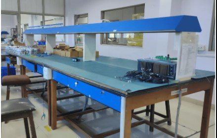
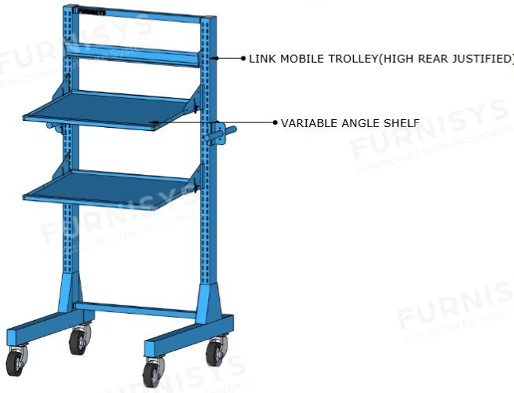
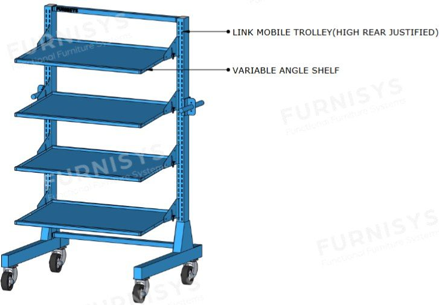

- Industry
- Manufacturing, gas detection and environmental safety equipment
- Application area
- Assembly and testing
- Furnisys systems
- Scitec Workstation, Link Mobile Trolley
- Engagement
- Site visit and product configuration
Precision products built on furniture that wasn't
Situation
The client makes gas and environmental safety instrumentation: detector tubes, electrochemical sensors, portable and fixed monitors, emission monitoring systems and air quality analyzers. Their assembly line was running on non-standard wooden furniture.
As products became more complex and the business put more weight on precision and repeatable processes, the benches became the weak link. The client invited Furnisys to their facility to understand the work, starting with the assembly area, with other functions to follow based on the results.

Three jobs, three different pieces of equipment
The challenge
After walking the layout and reviewing the existing benches, the requirement split into three parts:
- Assembly workstations for seated work, with an ESD-protected top for PCB soldering and sensor assembly, a pegboard, a tool rail for pneumatic tools, a power rail, a bin rail for at least six bins, storage and good lighting.
- A laptop handling trolley for testing and configuring detectors, with an angle-adjustable laptop shelf, 360° castors with locks and a lockable drawer.
- A material handling trolley to carry finished devices to the testing lab, with several adjustable shelves rated for roughly 50–60 kg each.
How do you standardise a line without slowing it down?
The question
How do you replace improvised wooden benches with a system that supports every sub-process of assembly, from soldering to final validation, and keeps devices moving between assembly and testing?
Configured around the assembly sequence
The Furnisys approach
1. Scitec Workstation for assembly
We proposed a Scitec Workstation for its steel construction, load capacity and modular accessories. It was configured with:
- ESD accessories for safe handling of PCBs and gas sensors
- A pegboard with slotted hooks, screwdriver holders and spanner trays
- A bin rail holding six bins for fasteners, connectors and small parts
- A horizontal power rail for soldering stations and multimeters
- A 19" fixed tube light with reflector for inspection and soldering
- A tool rail with spring balancer for electric screwdrivers and pneumatic guns
- A bottom shelf for semi-finished units and tool kits
2. Laptop handling trolley
A Link Mobile Trolley with a rear-justified frame and two variable angle shelves. The laptop shelf adjusts across five positions from flat to 25°, and the second shelf holds calibration equipment and test accessories. A bin rail carries spare connectors and test jigs, and dual-locking castors keep it steady during testing.

3. Material handling trolley
A Link Mobile Trolley with four variable angle shelves, each rated for 60 kg UDL, for moving assembled units from assembly to the testing lab.

From soldering to the testing lab
How the setup works together
The workstation carries the four assembly stages in sequence: PCB soldering and component integration, display and control unit assembly, enclosure and mechanical integration, and final pre-dispatch validation. The laptop trolley comes to the device for firmware flashing, calibration checks, data logging and diagnostics. The material trolley then moves finished units to the lab in batches.
What changed on the line
What the configuration enabled
- An ESD-safe, standard workstation in place of improvised wooden benches
- Tools, bins, power and light at the point of use for every assembly stage
- A mobile test station that removes back-and-forth trips to fixed equipment
- Safer, organised transfer of finished units to calibration and verification
Start with one area, prove it, then expand
Furnisys perspective
The client chose to begin with the assembly area and extend to other functions based on results. Standard modules suit that approach: what works on one line can be repeated on the next without redesign.
Frequently asked questions
What should a gas detector assembly workstation include?
An ESD-protected worktop, a pegboard for hand tools, a bin rail for small parts, a power rail for soldering and test equipment, task lighting and a tool rail with spring balancer for powered tools.
Why use a mobile trolley for laptop-based testing?
It lets the operator take the laptop to the device for firmware flashing, calibration and diagnostics. The variable angle shelf keeps the screen at a comfortable angle, and locking castors keep it steady.
How much load can a Link Mobile Trolley shelf carry?
In this configuration each variable angle shelf was rated for up to 60 kg UDL.